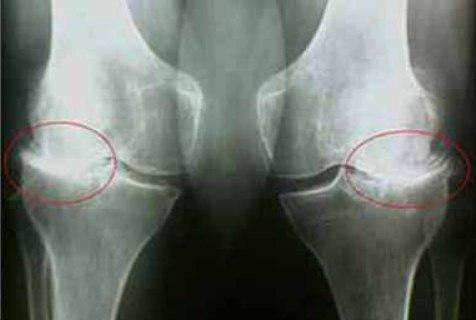
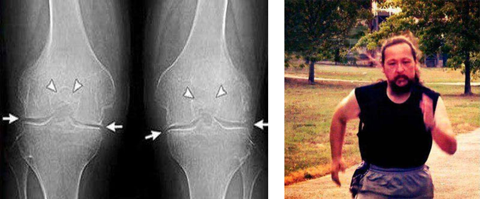

È più conveniente curare le articolazioni una sola volta che trattarle in modo permanente!
L'osteoartrite mi ha paralizzato in un paio di mesi, ma con l'aiuto di 5 piante ho rigenerato rapidamente la cartilagine e le articolazioni.
Vorrei condividere con voi la mia storia di come, da persona sana, sono finita su una sedia a rotelle in 2 mesi per poi riprendermi rapidamente e rimettermi in piedi!
Mi chiamo Yan Pak e ho 46 anni. Non avrei mai potuto pensare che le patologie articolari sono molto gravi, io, come ogni persona, ho sempre pensato: "Su una sedia a rotelle? No, questo non mi succederà mai..." Probabilmente è quello che tutti quelli che leggono stanno pensando... ma ho sottovalutato i soliti dolori articolari…
Tutto è cominciato così: in un giorno qualunque, mentre andavo al lavoro, ho sentito un dolore lancinante e sgradevole alle ginocchia, non particolarmente forte. All'inizio, naturalmente, non ci feci caso, perché sarebbe passato da solo, perché tutto passava sempre da solo, si risolveva da solo, guariva, ecc. Ma questa volta non è andata così, anzi, dopo un paio di mesi le ginocchia hanno cominciato a farmi male quando camminavo normalmente, e ogni giorno peggiorava sempre di più.
Pensai che avevo sollecitato troppo le articolazioni a causa di una vita attiva (lavoro in piedi, sport all'epoca) e pensai di aver bisogno di un po' di riposo, presi una vacanza per alleviare il più possibile le ginocchia, misi una pomata e tutto si sarebbe risolto definitivamente. Sono sicuro che molti lettori hanno provato la stessa sensazione nei loro casi. Ma queste riflessioni e pomate non sono servite a nulla, e il dolore è aumentato, e piuttosto rapidamente, in un breve periodo di tempo; alla fine, dopo un mese, sono arrivato al punto di non potermi più alzare, e ho iniziato a muovermi per casa su una sedia a rotelle, con una dose giornaliera di antidolorifici - almeno due pillole.
In breve, la situazione è passata da quello che sembrava un piccolo fastidio a una realtà spaventosa, non potevo nemmeno immaginare che tra qualche mese non sarei stata in grado di stare in piedi a causa del terribile dolore!
Quando ci si ammala, bisogna andare dal medico esperto che le curerà fino a quando non si morirà, questo è il suo lavoro.

In ogni caso, sono dovuto andare dal medico, mia moglie ha insistito per farlo. Il terapeuta mi mandò da un reumatologo, al quale riuscii ad arrivare dopo più di un mese, ma non ero l'unico ad avere problemi, eravamo in tanti. Sono stato accolto da un medico molto anziano, che senza dire nulla mi ha mandato a fare le radiografie e gli esami del sangue e urine. Al secondo appuntamento mi ha diagnosticato in un paio di minuti una specie di artrite, primaria o secondaria, ora non ricordo esattamente, e non ha importanza.
La diagnosi non mi interessa sapere come si chiama, ma come liberarsi di questa disgrazia rapidamente e in modo che non ci siano ricadute in seguito? Ed ecco che ero in attesa di una brutta notizia: la causa di questa piaga la dottoressa aveva annunciato la mia età! Ha detto: "È la tua età". Che età? Ho solo quarantasei anni! Mia figlia ha 2 anni, io sono un giovane padre, non un vecchio reumatoide, cioè artritico! Ma ciò che mi ha reso ancora più "felice" sono state le raccomandazioni di trattamento, che erano tre:
Il primo è quello di eliminare tutti gli sforzi fisici dalle gambe, cosa che non faccio da molto tempo; il dolore scoraggia rapidamente dall'afferrare cose pesanti.
Il secondo consiste nell'applicare un unguento riscaldante, che viene pubblicizzato in TV ogni giorno dalla mattina alla sera. A volte invidio le persone suggestionabili che dicono "basta una pomata e passerà" e ci riescono, ma devo ancora capire come una pomata poco attiva possa penetrare nella pelle, in tutti quei tessuti molli e connettivi per arrivare all'interno dell'articolazione e curare qualcosa lì, quindi chi può spiegarmi la fisica di questo processo miracoloso? Lo uso da molto tempo, ne ho usato molto, ma non serve a nulla.
La terza raccomandazione è di assumere delle pillole che aiutano a ricostruire la cartilagine - leggete attentamente - aiutano solo a ricostruire la cartilagine. Tutto qui! Avanti, siate pazienti, abbiate i soldi - entrate…
Quando abbiamo lasciato la "medicina", abbiamo capito che erano disposti a curarmi, ma non a guarirmi. E come ci sembrava, loro stessi non capivano quale fosse la causa della mia malattia, e se la causa era sconosciuta, come si poteva eliminare la malattia? Se le pillole (che tra l'altro non sono affatto economiche) servono solo ad aiutare, a cosa servono? Cosa dovrebbe riparare questo mio tessuto, con o senza le pillole? E perché lo faceva prima e perché non lo fa ora? Le domande sono infinite... Naturalmente c'era anche la possibilità di portare i miei soldi alle cliniche private, ma qualcosa mi diceva che il risultato sarebbe stato lo stesso, solo più costoso. Non credo nella sanità a pagamento o nella scuola a pagamento. Il problema non è il medico ma l'approccio al problema. Come si può curare qualcosa se non si cerca nemmeno di capire la causa del problema? È come cercare un gatto nero in una stanza buia: lo si può trovare o non trovare. Ma sto soffrendo e ho bisogno di una cura sicura.
Sono entrato in depressione. Ho avuto il panico, non sapevo cosa fare, ho pensato di arrendermi... Ma mia moglie, grazie a Dio, non si è arresa, e per questo le sono molto grato!
L'autocura non è consentita, è la legge, ma l'autocura è l'unico modo per curarsi. Mia moglie iniziò a pensare e a cercare di capire come affrontare la malattia, le venne l'idea e decise di sperimentare su di me, rendendosi conto che sarebbe stato disumano. Ha iniziato con l'autoformazione.
Certamente Internet è una grande cosa; in pochi istanti si possono leggere antiche leggende e ascoltare in tempo reale le lezioni di un professore dall'altra parte dell'oceano. Scoprire cosa dice il "trattato dell'imperatore giallo" sulle articolazioni, cosa ne pensano gli yogi, gli adepti dell'Ayurveda o del Vedanta.
Ho anche aiutato mia moglie a cercare informazioni, visto che per giorni non c'era nulla da fare. Dopo aver trascorso un mese e mezzo a studiare tutte le informazioni disponibili sul trattamento e il ripristino delle articolazioni, abbiamo stilato un elenco di cinque "diamanti" naturali, che in epoche diverse sono stati utilizzati per curare imperatori, re, yogi, monaci tibetani e molti altri.
Il primo posto va all "olio di eucalipto citrato". L'olio di eucalipto è un concentrato puro delle molecole che compongono la cartilagine e che rigenerano questa stessa cartilagine a una velocità sorprendente.
"Estratto di semi di castagno". La particolarità di castagno è la capacità unica di liquefare e rimuovere i depositi di sale. Scioglie immediatamente i "depositi" di sale nelle articolazioni e, dopo 15-19 giorni di uso regolare, scioglie completamente i sali nelle articolazioni e nella colonna vertebrale. Una proprietà molto utile.
"La consolida maggiore" è il "farmaco" antinfiammatorio naturale più veloce. La consolida distrugge rapidamente qualsiasi processo infiammatorio. Da sempre viene utilizzato per trattare sciatica, reumatismi, poliartrite e gotta.
"Mentolo”. Blocca il dolore e agisce anche come immunostimolante, ripristinando il processo autoimmune nell'organismo, che è il punto di partenza delle malattie articolari e della degradazione della cartilagine. Il mentolo è stato utilizzato in diversi tempi per trattare l'osteocondrosi, l'artrite e i reumatismi.
"Peperoncino selvatico". Ho scritto appositamente dei quattro ingredienti medicinali; il quinto, il peperoncino, non cura esattamente le articolazioni, ma è altrettanto importante. Il peperoncino selvatico ha la proprietà di potenziare gli effetti degli ingredienti medicinali. E due: protegge i tessuti ossei e cartilaginei. In altre parole, le prime quattro piante curano le articolazioni e la cartilagine, mentre il peperoncino MANTIENE il risultato per anni.
Mia moglie ha trovato ciò che mi può curare!
Abbiamo cercato per 2 mesi diversi rimedi che includessero questo composto, ma la ricerca è stata inutile. Ero personalmente frustrato, dubitavo già che qualcosa potesse aiutarmi.
Tuttavia mia moglie non si è arresa! Era sempre alla ricerca e un giorno si imbatté casualmente in un articolo di un medico che parlava di un rimedio che ripristinava qualsiasi cartilagine, qualsiasi articolazione. Incuriositi, abbiamo letto la ricetta del rimedio in questione e la composizione era esattamente la stessa del nostro elenco precedente! C'è la consolida medicinale, l'ippocastano, l'olio di eucalipto, il mentolo, il peperoncino, tutta la gamma dei migliori estratti per le articolazioni.
Eravamo felici, avevamo trovato quello che cercavamo! Ma abbiamo avuto altri problemi, sono stato licenziato dal mio lavoro, perché dicevano che nessuno mi voleva come storpio. Il denaro a disposizione è diventato molto scarso, dato che lo stipendio di mia moglie era esiguo. Il prezzo del rimedio fluttuava continuamente ed era piuttosto alto, così per 2 settimane mia moglie è andata ogni giorno su diversi siti web alla ricerca di questo rimedio per vedere se era disponibile a un prezzo accessibile. E un giorno ha finalmente visto che era disponibile sul sito web di questo medico. Immaginate, a tutti. Mi ha avvisato immediatamente e ho fatto subito l'ordine, perché tanto la merce la porteranno via prima che tu te ne accorga! Dopo circa 10 minuti, una ragazza gentile mi ha chiamato e ha iniziato a parlarmi del prodotto nel dettaglio:
Il prodotto agisce quasi immediatamente, il 2° giorno la mobilità dell'articolazione viene ripristinata e il dolore scompare completamente in 8-12 ore. Tuttavia, è necessario un ciclo di 20-27 giorni per il trattamento e per consolidare il risultato negli anni a venire.
- Signorina, senza offesa, ma io ne so più di lei su questo farmaco, quindi non ci provi. Preferisco farmi consegnare almeno 10 confezioni.
- Mi dispiace, ma non è possibile ordinare 10 confezioni. A causa dell'elevata richiesta del programma di prestazioni, forniamo un massimo di 5 confezioni per mano.
- Oh, ma dai! Ho aspettato due settimane, volevo avere un extra... Va bene, allora cinque...
Volevo ordinarne dieci in una volta sola, per sicurezza. Dopo tutto, si tratta di un prodotto introvabile che difficilmente si può trovare altrove. Alla fine l'avrei regalato, ma la politica dell'azienda è crudele:
non più di 5 confezioni alla volta.
Mi è stato permesso di ordinare solo 5 confezioni di questa crema, ho confermato l'ordine e mi è stato detto di aspettarmi che il corriere consegnasse l'ordine entro 2 giorni. Con sorprendente rapidità, in pochi giorni, ho ricevuto il mio ordine.
I risultati. Sono fantastici!
Sapevo che il trattamento sarebbe stato relativamente veloce, il corso era di soli 20-30 giorni, ma che avrei sentito l'effetto così rapidamente è stata una sorpresa! (qui di seguito ho descritto come mi sentivo dopo 1 settimana, 2 settimane e così via).
Dopo aver trattato le ginocchia prima di andare a dormire, mi sono addormentato sulla schiena, come al solito, perché non sono abituato a dormire in un altro modo: mi fa male. Mi sono svegliato sul fianco destro, appoggiando le articolazioni doloranti sul letto, e non ho sentito alcun dolore! Ho iniziato a sollevare delicatamente le gambe e ancora non ho sentito dolore! Dopo 8 ore di sonno con questo gel, il dolore era sparito! Mi alzai, abbassai i piedi sul pavimento e volli alzarmi in piedi, click-click le mie ginocchia doloranti risposero e sentii un leggero dolore. Ok, aspettiamo a camminare, sono passate solo otto ore di trattamento, ho pensato.
Le istruzioni dicono: applicare sulle articolazioni dolorose due volte al giorno. Ho iniziato ad applicarlo due alla volta per velocizzare il processo. Mettevo su di esso una pellicola per tenerlo al caldo.
Cronaca della mia guarigione
Avevo impiegato sei mesi per trovare questo rimedio e altri due mesi per aspettare che fosse disponibile. Tuttavia, ne è valsa la pena!
Tutto sommato, questi miei esperimenti su di me hanno dato risultati notevoli di guarigione al 100%, ora cercherò di ricostruire le mie sensazioni giorno per giorno.
8 ore di trattamento:
il dolore è scomparso durante il riposo. Rimangono lievi sensazioni dolorose quando ci si muove
Giorno 1: il dolore è scomparso completamente. Il gonfiore è diminuito. Riesco a piegare le ginocchia, ma le articolazioni sono ancora doloranti.
7° giorno: la sensazione di scatto nelle articolazioni è finalmente sparita. Posso muovermi facilmente, piegare le ginocchia, stare comodamente in piedi, ma non ho ancora osato camminare.
14° giorno: Una sensazione di salute! Passeggiata in casa, passeggiata all'aperto: nessun fastidio!
Giorno 21: mi sento benissimo, ho fatto una corsa di 1 km e non ho sentito alcun dolore! Mi sento come un neonato!
28° giorno: Ho fatto alcuni esami e radiografie alle ginocchia. Nessun segno di artrite! Cartilagine nelle articolazioni da ragazzo di 30 anni. Il medico ha detto che la radiografia precedente era probabilmente sbagliata e quindi la diagnosi di osteoartrite era errata.

È più conveniente curare le articolazioni una sola volta che trattarle in modo permanente!
Ho speso un sacco di soldi per vari prodotti per la riabilitazione delle articolazioni, per le visite mediche, per gli antidolorifici e persino per la sedia a rotelle. E mi sono reso conto di una cosa: è meglio curarsi una volta e spendere, grosso modo, 200-300 euro per un corso, e sarà molto più economico che comprare continuamente pomate inutili, antidolorifici, pillole e andare a visite mediche, fare risonanze magnetiche e ogni sorta di esami costosi. Anche il fatto che si possa diventare disabili, meglio comprare un corso una volta ed essere guariti che smettere di camminare dopo un po', pensateci... Anche io mi sono lasciato ingannare da vari farmaci che sono davvero una truffa, non perdete tempo, credetemi per la mia triste esperienza :( Vi ho raccontato la mia storia, la decisione spetta a voi. Buona fortuna a tutti!
P.S. Caro lettore, grazie per aver letto questo articolo fino alla fine, è stato un piacere. Per ringraziarvi della vostra pazienza, potete lasciare una richiesta qui sotto per ricevere la crema. Mi sono dimenticato di dire che la crema si chiama
Nanoflex.
Ci è voluto mezzo anno per trovare questo prodotto e vi fornisco queste informazioni in 5 minuti di lettura, perché sono prima di tutto un essere umano e capisco che molti, come me, hanno bisogno di aiuto. Condividete i vostri successi nei commenti. Se conoscete altri farmaci di questo tipo, scrivetemi pure!
Sono grato per la mia guarigione a mia moglie, che non mi ha abbandonato, che ha cercato il modo di rimettermi in piedi. Le voglio molto bene, la apprezzo e la rispetto!
La promozione è valida fino al
compreso. Sono disponibili 30.000 unità di prodotto per ogni fase. E si esaurisce completamente in 3-4 settimane. E questo nonostante l'assenza di pubblicità in TV e alla radio. Le persone si passano informazioni a vicenda, consigliano amici e parenti. Anche per noi è stata una sorpresa che le informazioni su Nanoflex si siano diffuse così rapidamente.
Perciò, se siete fortunati da riuscire ad arrivare prima di quella data, vi consiglio di prenotare Nanoflex il prima possibile. Quest'anno non ci sarà sicuramente una seconda promozione.
Ad oggi, il
abbiamo una quantità residua di Nanoflex:
43
unità.
INDOVINATE CHE PORTA NASCONDE IL 50% DI SCONTO
39
€
78 €
Occorre solo inserire il proprio nome e numero di telefono.
Sbrigatevi! Ha ancora a disposizione:
10
:
00
Congratulazioni!
Potete prenotare il prodotto a
39
€!
78 €
OK
Congratulazioni!
Potete prenotare il prodotto a
34,99
€
OK
 DISCUSSIONE
DISCUSSIONE

Rosa Torelli / Casoria
È incredibile! Lei ha fatto un vero e proprio studio! Grazie per la ricetta, proverò il trattamento per le ginocchia. Non resta che aspettare che la promozione ricominci.

Magra Marco / Villafranca
La crema Nanoflex
è un ottimo trattamento per l'artrite! L'ho provato anch'io, anche se il mio medico mi ha sconsigliato di buttare via i soldi. Ora, anche lui ha notato i progressi ed è sorpreso.
Vantaggi:
Effetto rapido.
Svantaggi:
Non disponibile in farmacia.

Graziella Biasini / Borgosesia
Ho l'artrite alle anche, alle spalle, alle cervicali. Prendo pillole quando fa più male del solito. La crema Nanoflex è una novità, devo provarla, soprattutto se la paragono a quanto ho speso in analgesici.

Maurizio Turini / Roma
Cinque anni fa ho curato un'ulcera gastrica, sempre con estratti di CO2. Non ricordo il nome, ma mi sembra che sia lo stesso produttore... Vi farò sapere quando mi ricorderò il nome.

Maria di Leva / Chiari
Anche lavoro d'ufficio rovina la salute del corpo. Le ginocchia mi fanno male come se non ci fosse sangue. Spero che questa crema mi aiuti. È il mio terzo giorno.
Nessun dolore a riposo o quando si cammina, il che è positivo.

Giuseppe Zugno / Empoli
Grazie per le informazioni! Convivo con l'osteoartrite del ginocchio da 12 anni. Si manifesta in autunno e in primavera. Uso anche Nanoflex quando la situazione peggiora. Secondo me funziona benissimo. È necessario cambiare le mie medicine. È l'ultima generazione. Naturalmente sono costosi.

Barbara Gerice / Rosolini
Anch'io ho ordinato Nanoflex per mio marito, dopo una lunga ricerca di un prodotto adatto. Spero che sia d'aiuto... Capisco come mio marito stia soffrendo... Al freddo non riesce a stare seduto o a camminare... Me lo ha consigliato un reumatologo. Vediamo se funziona. In attesa della consegna!

Amato Giuseppa / Partinico
E' troppo costoso...

Sandra Orecchioni / Collepasso
Cara Giuseppa, se questo ti costa caro, allora credimi, da ex paziente artritico, significa che sei una persona sana e che non hai alcun dolore! Quando le mani fanno così male da non riuscire a tenere un cucchiaio e le lacrime scendono a fiotti, il costo della crema Nanoflex vi sembrerà un semplice centesimo! Allora sarete disposti a pagare qualsiasi cosa per fermare questa tortura, almeno per un po'. Questo è ciò che dico per esperienza personale. È meglio non lasciare che si arrivi a questo punto e, non appena ci si ammala, bisogna interrompere subito il problema. Non augurerei a nessuno quello che ho passato, l'osteoartrite è una cosa terribile.
Amato Giuseppa / Partinico
Beh, se è davvero utile, è un prezzo normalissimo, non c'è dubbio. Ma sarà utile? Ho un'osteocondrosi cervicale e a volte la mia testa si rompe per il dolore. So cos'è il dolore, non c'è bisogno di spiegarlo) La domanda è: la crema curerà il problema o no?
Sandra Orecchioni / Collepasso
Non posso dire nulla sull'osteocondrosi: non ne ho sofferto. Ma l'osteocondrosi è essenzialmente usura della cartilagine della colonna vertebrale + depositi di sale + nei casi avanzati, degradazione dell'osso vertebrale. E la crema Nanoflex è in grado di ripristinare tutto, quindi non vedo perché non provarla. Non capisco però i tuoi dubbi, se qualcuno mi avesse detto quando soffrivo di artrite: "C'è un sacco di robaccia là fuori, ti aiuterà! Mangialo!" Non avrei esitato, perché se c'è anche una minima possibilità, bisogna provarlo! E questo è un motivo in più per convincersi dell'efficacia del rimedio.
Amato Giuseppa / Partinico
Sono tutte stronzate! Non ci credo! Non si può mai curare l'artrite in un mese, le persone sono state trattate per anni con farmaci ed esercizi e i risultati sono stati peggiori!

Rita Tumminello / Vittoria
Che ci crediate o meno, è un vostro diritto, per carità. Posso parlare per me: la crema ha curato le mie ginocchia. Prima di questo, ho provato anche molte pomate, pillole e persino iniezioni, ma ho avuto pochissimi risultati! O non aiuta, o aiuta ma non a lungo. E dopo un ciclo di Nanoflex, da quattro anni non mi ricordo più dei dolori delle mie ginocchia! Lo consiglio e continuerò a consigliarlo a tutti!

Clara Galu / Civita Castellana
Sopra si chiedeva dell'osteocondrosi cervicale, ebbene, io l'ho curata. Sì, Nanoflex. E sì, in un mese. Anche un po' meno, perché ho ordinato solo 3 confezioni e non aveva bastato per un corso completo. Ma è un anno che il collo non mi dà più fastidio e i mal di testa sono ormai un ricordo del passato.

Federica Mariotti / Ponsacco
Per miracolo ho scoperto Nanoflex, non ricordo nemmeno come. Ho seguito un corso che, tra l'altro, costa quasi 4 volte meno del corso prescritto dal medico! Ora sono al terzo anno e l'artrite è sparita. Quindi, ragazzi, tirate le somme, trattatevi bene e sarete felici. È un peccato che non me l'abbiano data quando l'ho presa. Ma ancora una volta mi sono convinto che il rimedio è davvero di buona qualità.

Damiano Gravina /
Alberona
Mia madre aveva un problema di lunga data con un'articolazione del braccio. Quando le ho comprato questa crema, mi ha guardato come se fossi pazzo. Sono riuscito ad attrarla grazie alla sua composizione naturale, senza sostanze chimiche. Ha iniziato ad utilizzare il prodotto due volte al giorno.
Stranamente, dopo solo un paio di giorni di utilizzo, il dolore iniziò gradualmente a diminuire e dopo un mese mia madre era in grado di piegare il braccio senza alcuna difficoltà. Nessun unguento ha mai funzionato in questo modo e lei ne ha provati tanti. In generale, possiamo dire che la crema funziona, ho ordinato altre 5 confezioni per lei sul sito web in modo che possa usarla costantemente e non far correre l'artrite. Infatti, se non vi prendete cura delle vostre articolazioni, potreste ritrovarvi in una situazione catastrofica.

Giulio Miracola / Grugliasco
In passato sono stato un atleta professionista, quindi ho subito molti infortuni. Di solito si trattava di piccole distorsioni o stiramenti, ma qualche anno fa mi sono infortunato gravemente al ginocchio. Per un po' ho dovuto persino camminare con una stampella. Nessun trattamento è servito a molto, ha solo alleviato il dolore temporaneamente. Poi, quando facevo attività fisica, il dolore diventava insopportabile; il ginocchio si gonfiava ed era doloroso persino camminare.
Di conseguenza, ho dovuto abbandonare lo sport. Prendevo antidolorifici più volte al giorno per alleviare il dolore.
La crema è stata ordinata da mia moglie, che aveva trovato informazioni al riguardo su un forum medico. Dopo un paio di giorni di utilizzo regolare, il dolore era notevolmente diminuito. Ero in grado di camminare senza alcun dolore. Una settimana dopo ho dimenticato gli antidolorifici. Io e mia moglie stiamo ristrutturando la casa e finora il ginocchio non mi ha dato alcun fastidio, nemmeno con lo sforzo. Per quanto riguarda il futuro, ho intenzione di tornare a fare sport, ma naturalmente dovrò fare più attenzione. Ogni tanto uso ancora il gel sul ginocchio, ma solo per precauzione. Ne ho ordinati altri due per mia moglie, in modo da poterli avere sempre a portata di mano quando ne ho bisogno.

Elisabetta Gaeta / Livorno
Quando mi è stata diagnosticata la radicolite, sono quasi scoppiata a piangere. Quale radicolite?! Ho solo 38 anni! Ma si scopre che è possibile e che l'età non ha nulla a che fare con questo... La crema Nanoflex ha riportato la mia schiena all'età di 16 anni. Grazie per avermi ricordato, mi sono appena ordinato un'altra crema, non sarà superflua come misura preventiva! Se siete interessati, c'è ancora della crema in vendita, ma ne è rimasta pochissima: al momento dell'ordine ne avevano solo 490 confezioni.

Buccolieri Maria / Verona
Grazie mille ragazzi! Mi avete dato la speranza che non tutto è perduto. Ho ordinato Nanoflex, non tarderò a scrivere ad Yan in merito ai risultati.

Scorte residue di Nanoflex:
43
pezzi.
Gestione delle richieste di Nanoflex nell'ambito del programma promozionale
Ordina ora